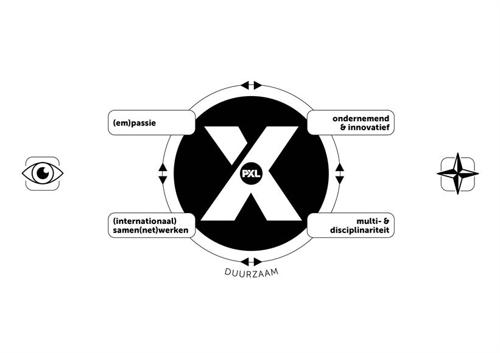

My development within the core roles of a digital designer during Workplace Learning 1.
I have proven that I can translate client requirements into a solid visual identity. Projects like 'Campus Karting app and web', 'IBE Motion' and 'Spirithorses' have taught me how to work from a raw concept to a final, polished design.
For 'BrightNews', I am working on a large-scale project featuring backend logic and AI integration for content filtering. Additionally, I learned how to technically build and deploy this portfolio website from scratch.
During this trajectory, I learned to pro-actively gather feedback from lecturers and apply these insights directly. Furthermore, I significantly developed my skills in presenting a product. A crucial part of my growth was learning how to collaborate within a team; from clear communication to collectively safeguarding the project vision. My next step is to fully apply these experiences within a professional team in a corporate environment.
I gained deep insights into project management: from accurate time estimations to monitoring ongoing progress. I now better understand the amount of effort and dedication required to deliver a premium final product.
The past semester focused entirely on professionalization. It was a wonderful experience to transition from abstract ideas to building a real, functional website.
The process of moving from design to an efficient realization comes naturally to me. I thoroughly enjoy structuring a project from start to finish and delivering it as cleanly as possible.
It wasn't always easy to hear that a design did not yet fully meet the expectations of the lecturers. Although this was sometimes tough at the moment itself, we put our shoulders to the wheel as a team. By taking this critical feedback seriously, we were able to elevate the concept to a much higher level and ultimately deliver a result we are truly proud of.
I only now truly realize how much time and microscopic detail goes into a premium website. This experience will help me work even faster and more efficiently in the future, allowing me to spot weaknesses instantly.
This website is my personal business card. I am very proud of how it leaves a lasting impression on others and perfectly reflects my growth as a designer.
My primary goal is to request interim feedback more frequently. By not waiting until a project is completely 'finished', I create space for major adjustments without running into time constraints.
I want to optimize my Figma workflow by working with reusable master components and design variables more frequently, which will significantly increase my overall design efficiency.
My professional growth within the core roles of a digital designer
during Workplace Learning 2.
During WPL2, I elevated my skills to an industry standard. For Karting Genk, I crafted a complete, high-energy visual identity. By maintaining a highly critical eye on my work, I now deliver high-fidelity interfaces that mirror the real adrenaline of motorsports.
While I was building single web pages last year, I now comprehend the entire product development lifecycle. I engineered complex component libraries and interactive prototypes in Figma for both the web platform and the event app, while further optimizing my GitHub version control workflow.
My core learning goal from WPL1 has been fully achieved: I no longer wait until a design is 'finished' but test iteratively using agile feedback loops. Within our cross-functional team, I acted as the bridge, conveying complex design choices clearly to developers and stakeholders.
WPL2 focused heavily on leadership and real-world execution. Serving as Scrum Master, I led daily stand-ups and managed the product backlog. This professional growth aligns perfectly with my official registration as a business owner (KVK), transitioning from a student to an independent specialist.
This semester was the ultimate test in professionalization. Designing a digital ecosystem (website and mobile app) for a prominent, real-world client like Karting Genk brought healthy pressure and incredible motivation.
The Scrum methodology helped me immensely. Structuring sprints, managing user stories, and leading the team gave me great energy. Planning and watching live features come together—like the real-time ranking system and digital ticket wallet—was fantastic.
Managing different disciplines (designers vs. developers) was challenging. At times, complex Figma animations turned out to be harder to develop code-wise than expected. This forced me to stay flexible and dynamically steer the UI layouts without diluting the UX integrity.
I realized that documentation in Confluence is not a chore, but the backbone of large-scale engineering. Without crystal-clear handoffs, communication breakdown follows. Exceptional design is not just visually stunning; it must be technically documented flawlessly.
I am immensely proud of the Campus Karting Student League case study. The prototype is rock-solid, the user flows are logical, and the final deliverable radiates pure professionalism. It serves as the benchmark of my Digital Design portfolio.
I proved that I can successfully merge an organizational leadership role (Scrum Master) with pristine design deliverables. My workflow efficiency in Figma has doubled by using tokens and advanced interactive states.
My sharp focus on UX architecture and streamlined developer handoff will carry over to all future projects within my business venture. Designing strategically for high conversion is now my default standard.

My passion has matured: I don't just design attractive UI screens, I build meaningful, user-centered digital ecosystems.
My innovative drive is now official with my KVK chamber of commerce entry. I review project scopes with strategic commercial acumen.
As Scrum Master, I managed the cross-functional team, ensuring designer visions and technical implementation aligned effortlessly.
I speak both code language (GitHub/versioning) and design language, resulting in incredibly precise technical handoffs.
By engineering robust Figma component frameworks and structural documentation, all assets are inherently future-proof.